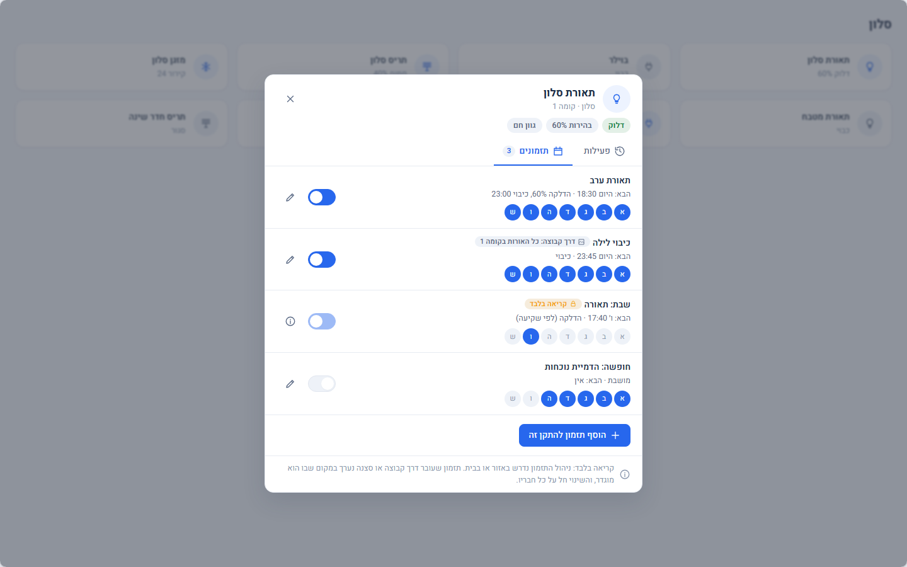
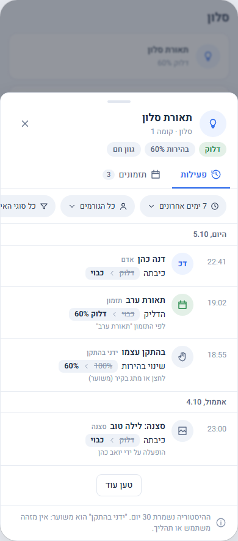
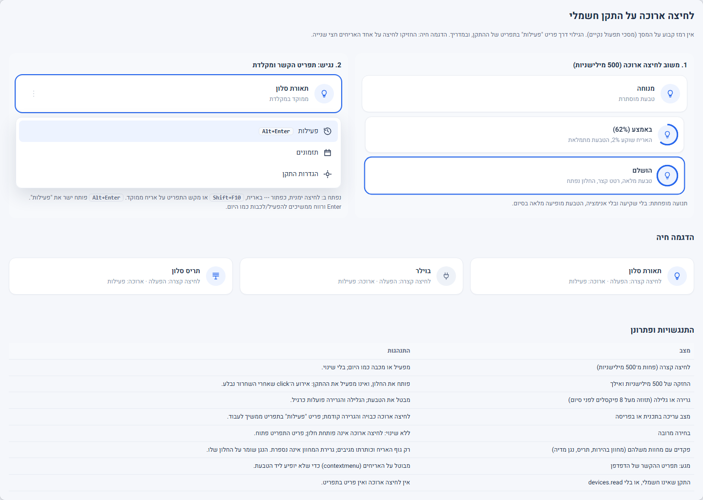

צילומי מסך






עיצוב סטטי לאישור, ללא קוד מוצר וללא מגע במערכת חיה; הנתונים מומצאים. הסרגל בגלריה בוחר מסך, רוחב (1440 / 820 / 390), בהיר/כהה וסקין (classic / domus / tesla / bubble); המצב נשמר ב־URL. מסמך השינוי והבדיקת היתכנות: docs/changes/CR-032-DEVICE-ACTIVITY.md.
| מסך | מה רואים | קישור |
|---|---|---|
| 1. לחיצה ארוכה והחלופות | משוב (טבעת 500 מילישניות), תפריט הקשר, מקלדת, טבלת התנגשויות (גרירה, עריכה, בחירה מרובה), הדגמה חיה שאפשר לנסות | שולחן עבודה טלפון |
| 2. לשונית "פעילות" | שורות לפי יום, גורם (אדם בשם, אוטומציה, תזמון, סצנה, ידני בהתקן, מערכת), לפני / אחרי, "טען עוד" | שולחן עבודה טלפון |
| 3. מסננים | תקופה, סוג גורם, סוג אירוע; בטלפון כגיליון לפי ui.dd_phone | שולחן עבודה טלפון |
| 4. לשונית "תזמונים" | הבא, ימים, מתג הפעלה, עריכה, "הוסף תזמון להתקן זה", תזמון לקריאה בלבד, תזמון דרך קבוצה | שולחן עבודה טלפון |
| 5. עריכת תזמון בתוך החלון | העורך הקיים של התזמונים, במסגרת החלון / הגיליון | שולחן עבודה טלפון |
| 6. מצבים | טעינה, ריק, אין הרשאה, היסטוריה לא זמינה, חלקית (פער), טוען עוד; ולתזמונים: ריק ואין הרשאה | פעילות תזמונים |
| 7. וריאנטים לפי סוג התקן | תאורה, מתג, תריס, מזגן | בהיר כהה |
| 8. מה נחשב "חשמלי" | טבלת domain והסבר איך הממשק יודע (שדה activity מהשרת) | פתיחה |
| סקינים | אותו חלון בכהה ובסקינים אחרים | כהה bubble domus כהה טלפון bubble כהה |
צילומי מסך סטטיים של כל המסכים נמצאים בתיקיית screens/ (מופקים עם shoot.mjs).


